EL PROYECTO
-MISION-
Battlerol.net trae como propuesta una plataforma de juegos híbridos que poseen elementos físicos
como cualquier juego de mesa, pero que a su vez se encuentran acompañado de una app que ayuda a la
gestión de los elementos, dando mayor dinamismo en las partidas y reduciendo los elementos en el tablero,
para brindar una experiencia más limpia y minimalista.
-DESARROLLO-
Desarrollado como un conjunto
de app’s en la web, aporta la evidente capacidad de adaptarse a una inmensa variedad de dispositivos,
cualquiera capaz de correr un navegador, brinda acceso a una plataforma sencilla y liviana, para que
grupos de amigos en una tarde sin preparación, puedan comenzar incluso una campaña gracias a la automatización
que brinda la plataforma.
-SUSTENTABILIDAD-
Este sitio y sus juegos son completamente gratuitos, libres de publicidad y no se necesitan
registros para disfrutar de ellos, por eso es fundamental el apoyo de la comunidad. Cada colaboración
ayuda a completar etapas del proyecto y mantener actualizados los sistemas existentes.
CONTACTO